All in One View
Content from Introduction to IGV
Last updated on 2026-09-03 | Edit this page
Estimated time: 20 minutes
Overview
Questions
- What is IGV and when would I use it?
- What kinds of genomic data can I explore with a genome browser?
- What file formats does IGV work with?
Objectives
- Explain what a genome browser is and why researchers use one.
- Describe the main types of genomic data that IGV can display.
- List common file formats supported by IGV.
- Confirm that IGV is installed and launches on your machine.
What is a genome browser?
A genome browser is a tool for visually exploring genomic data in the context of a reference genome. Instead of scrolling through millions of lines of a text file, a genome browser lets you scroll and zoom along a chromosome and see how different pieces of data — genes, sequencing reads, variants, signal tracks — line up against one another and against the genome sequence itself.
The Integrative Genomics Viewer (IGV) is a free, open-source desktop application originally developed at the Broad Institute for exactly this purpose. It is one of the most widely used genome browsers in genomics because it:
- runs locally on your own computer, so you can view your own (potentially unpublished or sensitive) data without uploading it anywhere,
- loads large files efficiently by reading only the region you are currently looking at,
- supports dozens of genomics file formats out of the box, and
- lets you load many different types of data as “tracks” and stack them on top of each other for direct comparison.
Why visualize genomic data?
Looking at raw output files is essential for sanity-checking a pipeline and for building intuition about your data. A genome browser helps you:
- spot obvious problems early, such as misaligned reads, coverage gaps, or a mislabelled reference genome,
- distinguish a real biological signal (e.g. a heterozygous SNP, an alternatively spliced exon) from a technical artifact (e.g. strand bias, low base quality, PCR duplicates), and
- build confidence in a result before spending time on downstream analysis.
What kinds of data can IGV display?
IGV is used across many types of genomics experiments. Four common examples are shown below.
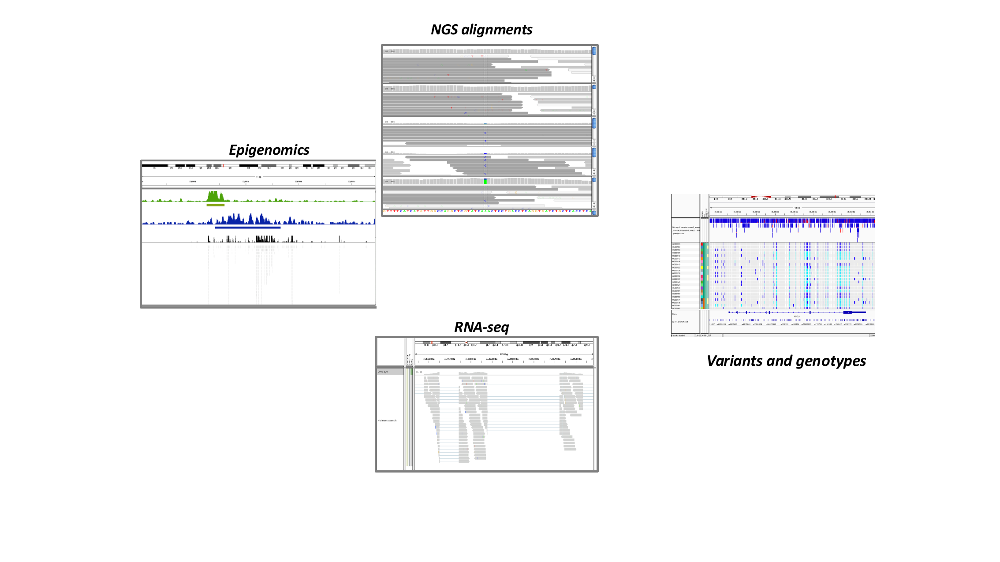
- Epigenomics — signal tracks (e.g. from ChIP-seq) showing where a protein of interest binds the genome, or where a histone modification is present.
- NGS alignments — individual sequencing reads aligned to the genome, useful for inspecting candidate SNPs, indels, and alignment quality.
- RNA-seq — read coverage and splice junctions across a gene, useful for studying gene expression and alternative splicing.
- Variants and genotypes — variant calls (e.g. from a VCF file) alongside per-sample genotypes, useful for comparing variation across many samples or populations.
In this lesson you will work through examples of each of these.
Where does the data in these tracks come from?
Most of the data types above start life as raw sequencing reads that are aligned to a reference genome and then further processed, for example ChIP-seq peaks are typically summarised into a coverage track (wig/bigWig) after alignment. IGV does not do this processing for you — it visualizes the output of upstream pipelines (alignment, variant calling, quantification). This lesson focuses on visualization, not on how the files were generated.
File formats
IGV supports a large number of standard genomics file formats. You do not need to memorize this list, but recognizing common formats will help you know what IGV can load directly.
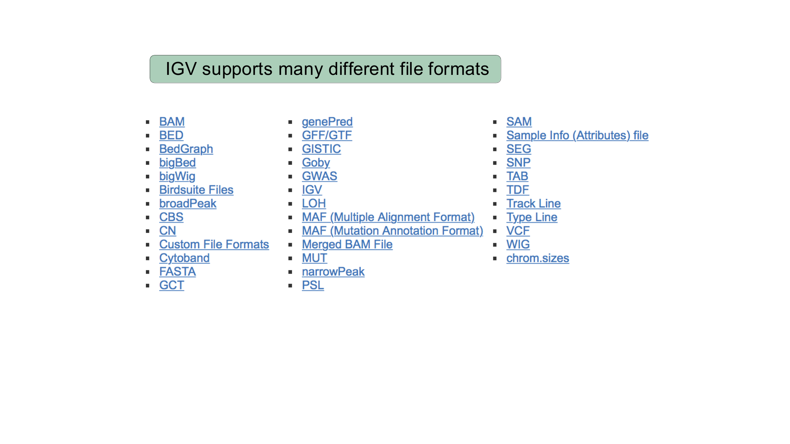
The formats you will use in this lesson are:
| Format | Contains | Used in |
|---|---|---|
FASTA (.fasta/.fa +
.fai) |
Reference genome sequence | Loading your own genome |
| BED | Simple genomic intervals/features (e.g. genes, SNP calls) | IGV Basics, Loading your own genome |
BAM (+ .bai index) |
Aligned sequencing reads | Viewing alignments and SNPs, Precomputing coverage |
| TDF | Precomputed coverage/summary data | Precomputing coverage |
| VCF | Variant calls and sample genotypes | Viewing variants |
Confirm IGV is installed
Launch IGV on your computer now (see the setup
instructions if you have not installed it yet). You should see an
empty IGV window with a genome drop-down menu in the upper left, reading
something like Human hg19.
If IGV opens and shows a genome selection drop-down, a chromosome ideogram, and an empty track area below it, you are ready for the rest of the lesson. If IGV does not launch, check that you downloaded the correct build for your operating system and ask an instructor for help.
- A genome browser lets you visually explore genomic data in the context of a reference genome, which helps you spot problems and build intuition that raw files alone do not give you.
- IGV is a free, desktop genome browser that runs locally and supports many genomics file formats, including FASTA, BED, BAM, TDF, and VCF.
- IGV can display many types of data as tracks, including epigenomic signal, aligned sequencing reads, RNA-seq coverage/junctions, and variant genotypes.
Content from IGV Basics
Last updated on 2026-09-03 | Edit this page
Estimated time: 50 minutes
Overview
Questions
- How do I load a reference genome and some example data into IGV?
- How do I move around the genome at different zoom levels?
- How do I read the sequence and gene tracks?
Objectives
- Select a reference genome and load track data hosted on the IGV server.
- Navigate between whole-genome, chromosome, and base-pair resolution views.
- Jump directly to a genomic locus or gene by name.
- Interpret the reference sequence track and the gene annotation track.
- Combine two numeric tracks with a simple arithmetic operation.
This episode uses example data hosted directly on the IGV server, so you will need an internet connection.
Select a reference genome
Click the genome drop-down menu in the upper left corner of IGV and select Human hg19. (If you only see Human hg18 in the menu, that is fine — select that instead.)
More hosted genomes
The genome menu is short the first time you install IGV, but IGV hosts dozens of genomes beyond human. Select More… from the genome drop-down menu to browse and add other hosted genomes (bacteria, model organisms, other builds, and more) to your menu.

Load data from the IGV server
Select File > Load from Server…, open the Tutorials menu (click the triangle/plus next to it — do not check the box next to Tutorials itself, or you will load everything underneath it), and check the box next to UI Basics (Encode).

Four tracks are loaded: ENCODE project ChIP-seq data representing histone modifications. Each track is displayed as a bar chart of signal intensities. This kind of data is a good choice for learning navigation, because the tracks are visually simple, but the navigation basics are the same no matter what type of data you load.
Navigate across the genome
IGV lets you move between four broad zoom levels: the whole genome, a single chromosome, a specific region, and individual bases.
Whole genome view
Select All from the chromosome drop-down menu, or click the Home button, to see all chromosomes at once. At this zoomed-out view, the gene track displays gene density rather than individual genes.
One whole chromosome
Select Chr1 from the chromosome drop-down menu, or click 1 in the genome ruler.

The genome ruler now shows more detail and a cytoband ideogram of the chromosome. The gene track starts showing individual genes, but there are still too many to make out individually.
A smaller region
Click and drag across a region in the ruler to zoom in on it. You can also double-click anywhere in a data track to zoom in centered on that point (Alt-click to zoom back out).

As you zoom, the ruler measurements and a red box on the cytoband diagram update to show you where you are in the chromosome.
To move around without changing the zoom level:
- Jump to another region on the same chromosome by clicking anywhere on the cytoband diagram.
- Scroll across genome coordinates by clicking anywhere in the data panel and dragging left or right.
Jump to a locus or gene by name
Type a locus in genomic coordinates
(e.g. chr1:144,874,969-969,268) or a gene name
(e.g. NRAS) into the search box in the toolbar and click
Go.
Base-pair resolution
Keep zooming in as before, or click one of the rightmost ticks on the “railroad track” zoom widget in the upper right corner, until you can see individual bases.
Typing NRAS into the search box and clicking
Go takes you directly to the gene, at a zoom level that
shows the full gene body along with the loaded ChIP-seq tracks. From
there, continue zooming in (drag across the ruler, double-click a track,
or use the + on the zoom widget) until individual bases and
their 1-2 letter codes appear in the sequence track at the bottom.
The reference sequence track
Once you are zoomed in far enough, a Sequence track appears showing the reference genome sequence, one base per column.

- By default, the forward strand sequence is shown. Click the arrow next to the sequence track to switch to the reverse strand.
- Click anywhere on the sequence track to show or hide a 3-frame amino acid translation.
The gene annotation track
IGV displays gene models (like the loaded RefSeq genes track) using the same convention as the UCSC Genome Browser: a horizontal line for introns, thicker blocks for exons, and even thicker blocks at each end for the untranslated regions (5’ UTR and 3’ UTR).
By default, overlapping transcripts for the same gene are drawn on a single line. Right-click on the track name and choose:
- Expanded to draw each transcript on its own line, or
- Squished for an even more compact view than the default.
Compare gene track display modes
Navigate to a gene with multiple transcripts, such as
EGFR. Right-click on the RefSeq genes track name
and try Collapsed, Expanded, and
Squished. What is the trade-off between these three
modes?
Collapsed draws all transcripts on one line (compact, but you cannot tell transcripts apart). Expanded draws one transcript per line (easiest to read individual isoforms, but takes up the most vertical space). Squished also draws one transcript per line but with much thinner rows, letting you fit many transcripts in a small space at the cost of readability.
Combining numeric data tracks
IGV can combine two numeric (signal) tracks with a simple arithmetic operation, which is useful for comparing or normalizing tracks without leaving IGV. Select Tools > Combine Data Tracks.

In the dialog, pick Track A and Track B from the loaded numeric tracks (for example, two of the ChIP-seq tracks you loaded earlier), choose an Operation (Add, Subtract, Multiply, or Divide), and name the result.

IGV adds a new track computed from the two source tracks at every position.

Combine two of the loaded ChIP-seq tracks
Using the four ENCODE ChIP-seq tracks loaded earlier in this episode, add two of them together with Tools > Combine Data Tracks. How does the combined track’s shape compare to its two source tracks?
The combined (“Sum”) track shows a peak wherever either source track has a peak, with the height reflecting the total signal from both tracks at that position. This kind of combination is useful, for example, to see a combined read-density signal without switching your eyes back and forth between two separate tracks.
- Load a reference genome first, then load data tracks with File > Load from Server… or File > Load from File…; use Genomes > More… to add other hosted genomes beyond the default.
- IGV supports four broad zoom levels: whole genome, chromosome, region, and base-pair resolution; drag on the ruler, double-click a track, or use the search box to move between them.
- The sequence track shows the reference genome and, optionally, a 3-frame translation; the gene track shows exons, introns, and UTRs, and can be displayed collapsed, expanded, or squished.
- Tools > Combine Data Tracks lets you add, subtract, multiply, or divide two numeric tracks into a new derived track.
Content from Loading Your Own Genome
Last updated on 2026-09-03 | Edit this page
Estimated time: 20 minutes
Overview
Questions
- How do I view my own genome, rather than one of IGV’s built-in hosted genomes?
- What do I lose by loading a genome from a FASTA file instead of one of IGV’s packaged genomes?
Objectives
- Load a reference genome from a local FASTA file.
- Add a gene annotation track from a local BED file.
- Explain why loading a genome from a FASTA file alone does not give you gene names or a cytoband ideogram.
The rest of this lesson uses your own local copy of chromosome 1
rather than data hosted on the IGV server, so from here on you will not
need an internet connection. This episode uses files from the
igvData folder you downloaded in Setup.
Clear out the previous session
Select File > New Session to clear the tracks and genome loaded in the previous episode.
Load a genome from a FASTA file
Select Genomes > Load Genome from File… (note:
this is the Genomes menu, not the File
menu), then browse to igvData/genome/ and open
chr1.fasta. This file contains chromosome 1 from human
genome build hg18.
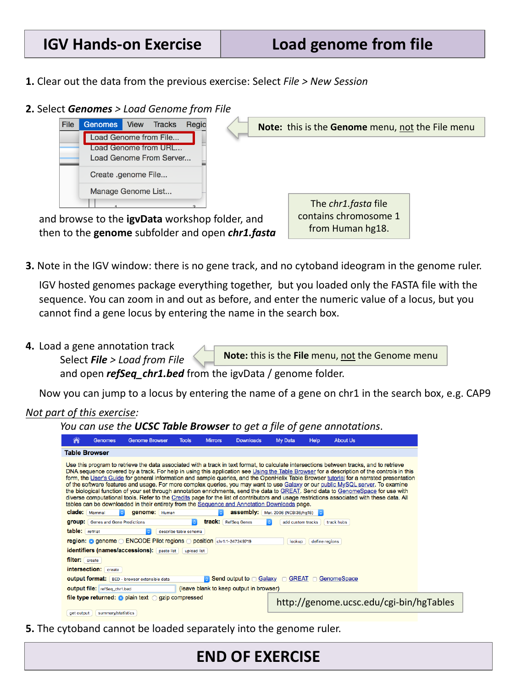
Notice that there is now no gene track and no cytoband ideogram in the genome ruler. IGV’s hosted genomes package a reference sequence together with a default gene annotation and cytoband data, but here you loaded only the FASTA sequence — so IGV has nothing else to show yet. You can still zoom in and out and enter numeric coordinates, but you cannot yet jump to a locus by gene name, because IGV does not know where any genes are.
Add a gene annotation track
Select File > Load from File… (note: this time it
is the File menu), and open
refSeq_chr1.bed from igvData/genome/.
Now you can jump to a locus by typing the name of a gene on
chromosome 1 into the search box, for example CAP9.
Jump to a gene by name
Before loading refSeq_chr1.bed, try typing a gene name
(e.g. CAP9) into the search box and clicking
Go. What happens? Now load refSeq_chr1.bed
and try again.
Before the BED file is loaded, IGV has no record of where any genes
are located, so searching by gene name fails (or is silently ignored) —
you can only navigate using numeric coordinates. After loading
refSeq_chr1.bed, IGV can match the gene name against the
annotation track and jump straight to it.
Where do gene annotation files come from?
The refSeq_chr1.bed file used here was generated from
the UCSC Table
Browser, a web tool for retrieving data associated with a genome
assembly (gene models, regulatory regions, and more) as a downloadable
file. This is a common way to obtain a gene annotation track for a
genome that is not already bundled with one.
Note that, unlike the gene track, the cytoband ideogram cannot be loaded separately — it is only available for genomes that package it in already.
- Load a custom genome sequence with Genomes > Load Genome from File…; load additional annotation tracks (genes, features) with File > Load from File….
- A genome loaded from a bare FASTA file has no gene names or cytoband ideogram until you add that information yourself as separate tracks.
Content from Viewing Alignments and SNPs
Last updated on 2026-09-03 | Edit this page
Estimated time: 45 minutes
Overview
Questions
- How do I inspect individual sequencing reads that support a candidate variant?
- How can I tell a real SNP apart from a technical artifact?
- What does a BAM alignment record actually contain?
Objectives
- Load aligned sequencing reads from a BAM file alongside a BED file of candidate variant sites.
- Read mismatched bases, coverage, and allele counts from an alignment track.
- Sort and color aligned reads to help distinguish real variants from artifacts.
- Use BLAT to check whether a suspicious signal is a genuine mapping or a multi-mapping artifact.
Background: paired-end sequencing and the BAM format
The alignment file you will load in this episode comes from paired-end Illumina sequencing: each DNA fragment is read from both ends, producing two reads (Read 1 and Read 2) separated by an unsequenced gap. The distance between the two reads’ outer edges is the insert size.
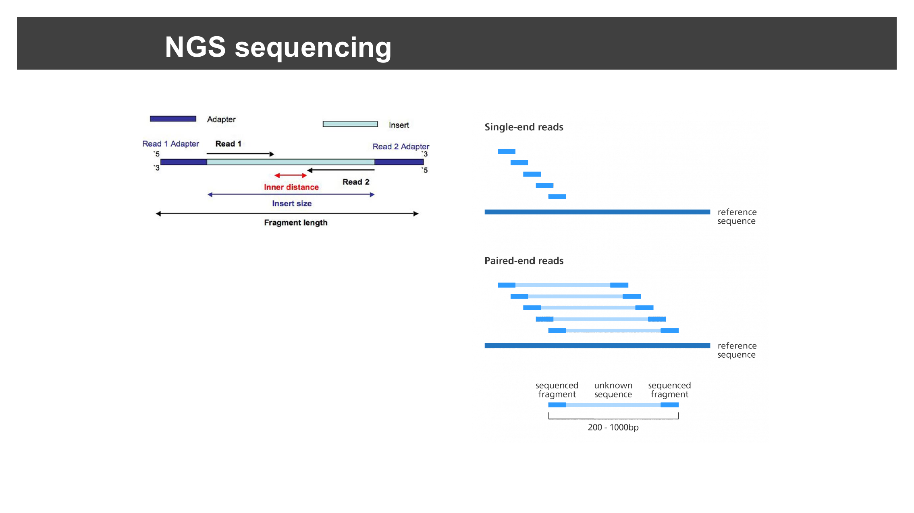
Aligned reads are stored in SAM/BAM format (Sequence Alignment/Binary Alignment Map — BAM is just a compressed, indexed binary encoding of SAM). Each alignment record includes the read name, its mapping position, a mapping quality score, a CIGAR string describing matches/insertions/ deletions along the alignment, information about its paired mate, and the read’s sequence and per-base quality scores.
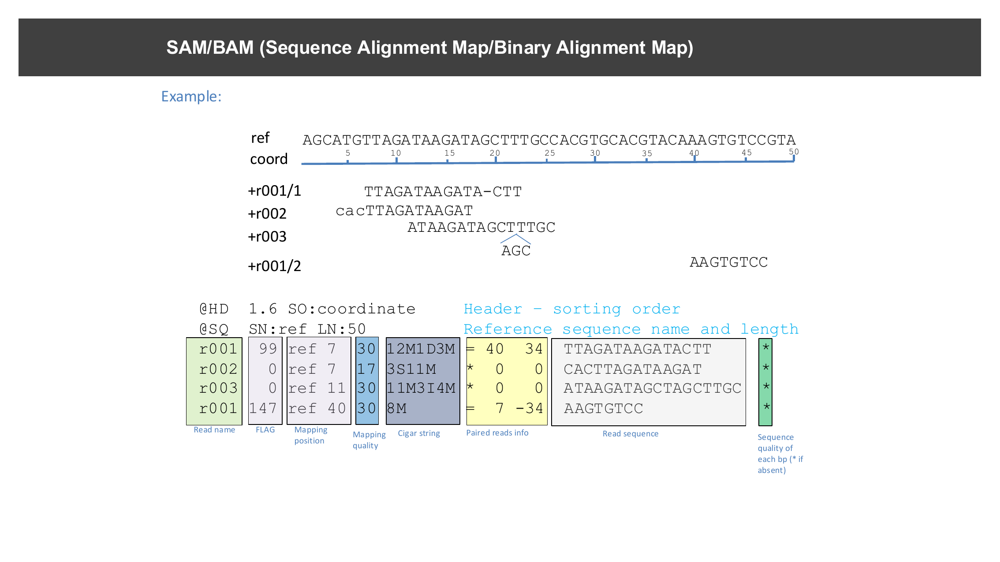
You do not need to read SAM/BAM records by hand to use IGV — this is what IGV’s alignment track visualizes for you — but recognizing these terms (insert size, mapping quality, CIGAR) will help you make sense of the popups and sort/color options used throughout this episode.
Reference genome
Make sure the reference genome is still set to the one you loaded in
the previous episode: select chr1.fasta from the genome
drop-down menu if needed.
Load the alignment and candidate SNP data
Select File > Load from File…, navigate to
igvData/snps/, and open:
-
snp_calls.bed— a BED file marking two candidate SNP loci, and -
NA12878.SLX.sample.bam— a small sample alignment file.
Loading a BAM file’s index
IGV automatically finds a BAM file’s index (.bai) as
long as it is named correctly
(e.g. NA12878.SLX.sample.bam.bai) and sits in the same
folder as the BAM file. Do not load the
.bai file directly — only load the .bam
file.
Navigate to the first candidate SNP
Type snp1 into the search box and click
Go.
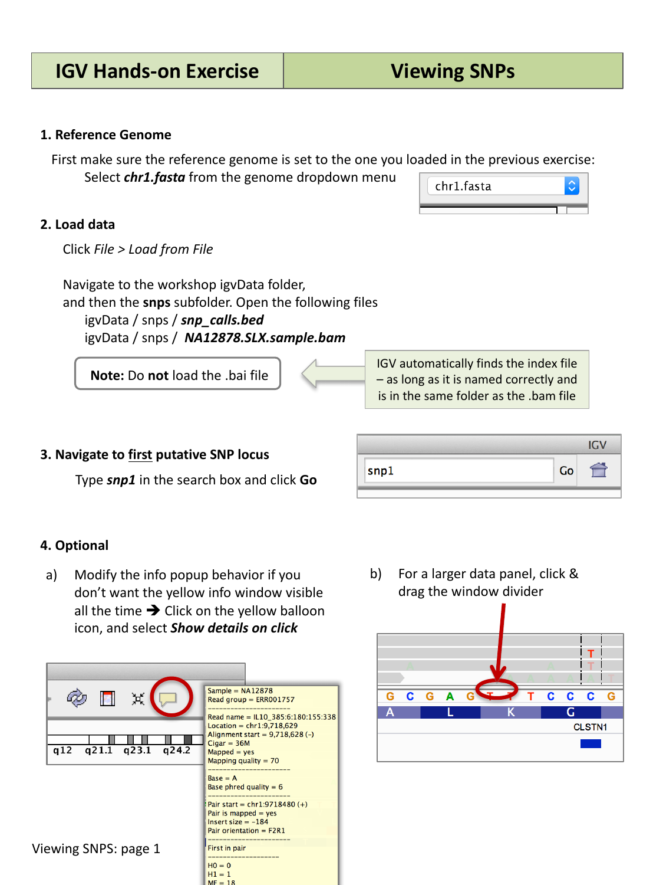
You should see individual aligned reads stacked as grey bars, with a red or blue bar above them summarizing the coverage and any mismatches at each position (the coverage track).
Popup behavior
By default, hovering over a read shows a popup with details (read name, alignment position, mapping quality, and more). If you would rather the popup only appear on click, click the yellow speech-bubble icon in the toolbar and choose Show details on click.
Sort reads by base to spot a real mismatch
First, click and drag to position the mismatched bases between the two vertical center guidelines. Then right-click (Mac: control-click) anywhere in the aligned reads and select Sort alignments by > base.
Mouse over (or click) the colored bar in the coverage track to see the exact allele counts and frequencies at that position.
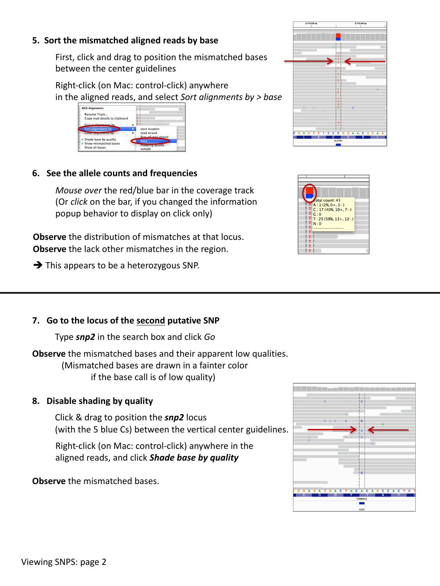
Observe the distribution of mismatches at this locus, and the lack of other mismatches nearby. This pattern — a consistent mismatch across many reads, at roughly the frequency you would expect for a heterozygous site, with no other noise around it — is a good sign of a real heterozygous SNP.
Compare the two candidate SNPs
Go to the locus of the second candidate SNP by typing
snp2 into the search box and clicking Go.
Compare what you see to snp1 — in particular, look at the
color/brightness of the mismatched bases (a fainter color indicates a
lower base quality). Right-click the aligned reads and toggle
Shade base by quality off and on to compare.
At snp2, many of the mismatched bases are drawn faintly,
meaning IGV is shading them by low base call quality. Turning off
Shade base by quality makes every mismatch look equally
solid, which can be misleading — with shading on, it becomes clear that
this locus is dominated by low-quality base calls rather than a strong,
consistent signal like at snp1. This is a warning sign that
snp2 may not be a real variant.
Sort and color reads by strand
Right-click anywhere in the aligned reads and select Sort alignments by > read strand, then right-click again and select Color alignments by > read strand.
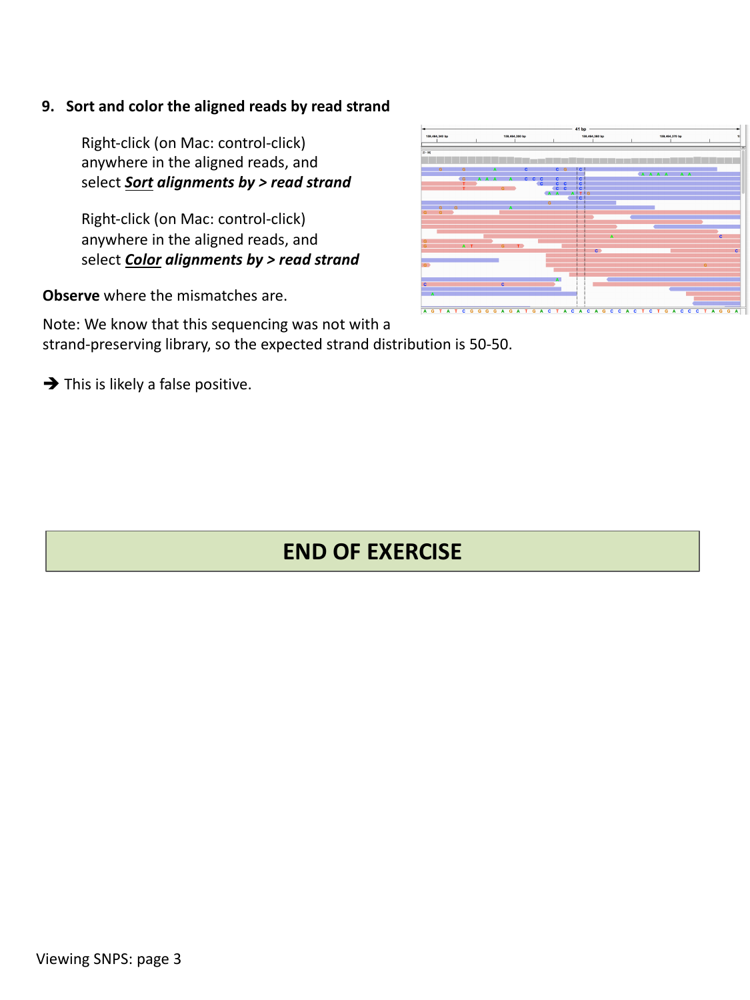
Observe where the mismatches fall relative to strand. If a sequencing library was not strand-specific, you would expect roughly a 50/50 split of reads on each strand, and a real variant should appear consistently on reads from both strands. If a mismatch only ever appears on reads from one strand, that is a red flag for a strand-specific artifact rather than a genuine variant.
Decide: real SNP or artifact?
Using strand sorting/coloring, examine snp2 again. Given
that this sequencing library was not strand-preserving
(so you would expect the mismatch on both strands roughly equally), what
do you conclude about snp2?
If the mismatched bases at snp2 are concentrated on
reads from only one strand, despite the library not being
strand-specific, this locus is likely a false positive
rather than a real heterozygous SNP — combined with the low base quality
observed earlier, there are now two independent pieces of evidence
against it being real.
Using BLAT to check a suspicious signal
Sorting and coloring reads tells you a lot, but sometimes a coverage
peak or a cluster of mismatches is suspicious for a different reason:
the reads underneath it might not belong there at all.
BLAT (Tools > BLAT…) lets you take a
read’s sequence (or any feature, or a sequence you type in) and search a
BLAT server for alternative places it could align in the genome.
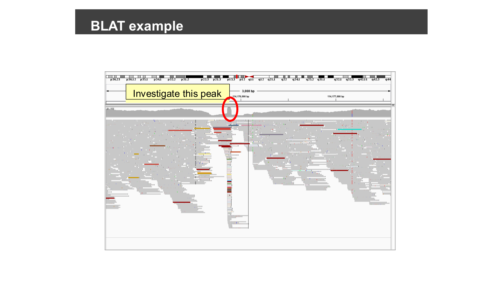
Right-click on a read at the locus you want to check and select BLAT read sequence.
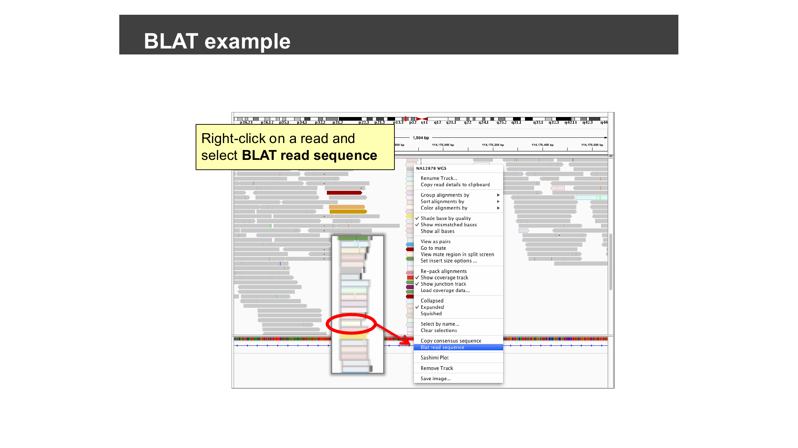
BLAT returns every place in the genome the sequence aligns well, ranked by score.
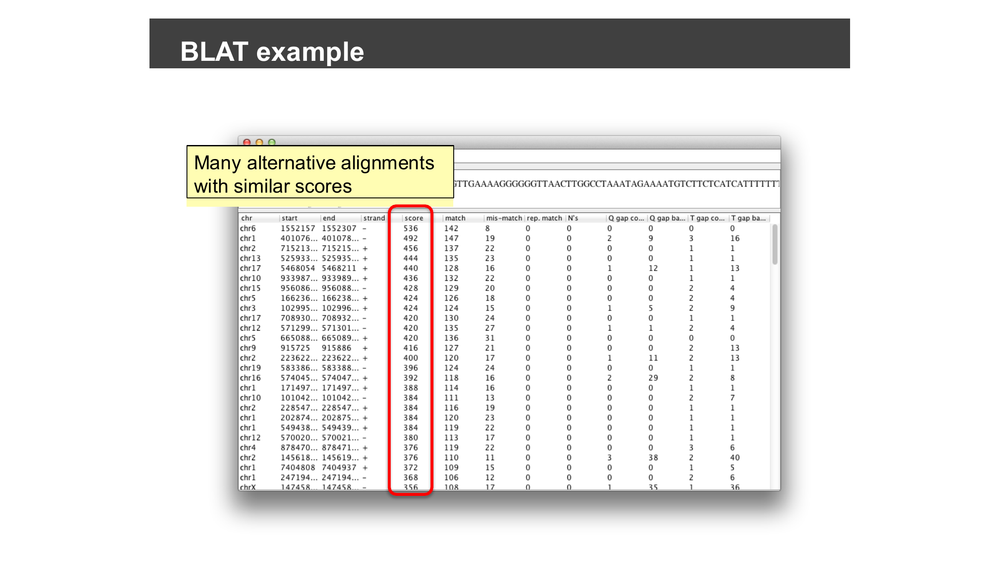
If BLAT returns one clearly best-scoring hit at the expected locus, the alignment is trustworthy. If it instead returns many alternative alignments with similar scores scattered across the genome — as in the example above — the read comes from a repetitive sequence that maps almost equally well to many locations, and the signal at your original locus should be treated with suspicion rather than taken as strong evidence for a variant.
When would BLAT change your conclusion?
You already found two independent warning signs against
snp2 being a real variant (low base quality, strand bias).
Suppose BLAT on a snp2 read had instead returned dozens of
equally good alternative alignments elsewhere in the genome. Would that
change your confidence, and why?
It would add a third, independent line of evidence against
snp2: reads that multi-map almost equally well to many
locations cannot be confidently placed at any single locus, so any
“variant” called from them is likely an artifact of ambiguous mapping
rather than a true difference from the reference genome at that specific
position.
- Aligned reads are stored in SAM/BAM format; recognizing terms like insert size, mapping quality, and CIGAR string helps you interpret what IGV shows you.
- Load a BAM file with File > Load from File…; IGV
finds its
.baiindex automatically as long as it is named correctly and kept alongside the BAM file. - Sorting and coloring aligned reads (by base, by base quality shading, or by read strand) helps you distinguish a real variant from a sequencing or alignment artifact.
- Warning signs of a false-positive variant include low base quality and a mismatch that only appears on reads from one strand when it should not.
- Tools > BLAT… (or right-click a read and choose BLAT read sequence) checks whether a read aligns uniquely or is a multi-mapping artifact from a repetitive region.
Content from Precomputing Coverage with igvtools
Last updated on 2026-09-03 | Edit this page
Estimated time: 25 minutes
Overview
Questions
- Why does my coverage track go blank when I zoom out?
- How do I precompute coverage data so it is visible at any zoom level?
Objectives
- Explain why coverage disappears when zooming out on a large BAM file.
- Use
igvtoolsto precompute a coverage summary (TDF) file. - Associate a precomputed coverage file with an alignment track.
This episode assumes you already have loaded, from the previous episodes:
- the reference genome
chr1.fasta, and - the alignment file
igvData/snps/NA12878.SLX.sample.bam.
The problem: no coverage at low zoom levels
Zoom all the way out by clicking the leftmost tick on the “railroad
track” zoom widget. Notice that the coverage track for
NA12878.SLX.sample.bam now shows no data at all, just a
message like “Zoom in to see coverage.”
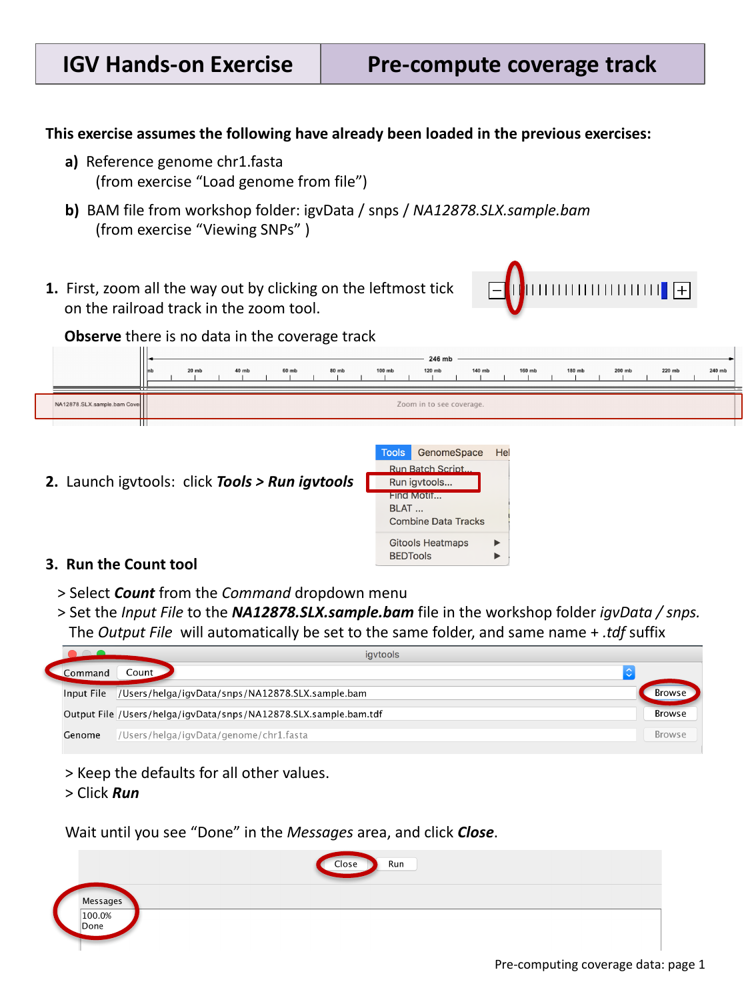
By default, IGV computes coverage on the fly from the reads currently
visible in a BAM file. At low zoom levels this would mean scanning huge
numbers of reads just to draw a rough summary, so IGV instead only
computes coverage once you are zoomed in far enough that this is fast.
To see accurate coverage at any zoom level, you need to
precompute it once, ahead of time, using the igvtools
Count function.
Precompute coverage with igvtools
Select Tools > Run igvtools…, then in the dialog:
- Select Count from the Command drop-down menu.
- Set the Input File to
NA12878.SLX.sample.baminigvData/snps/. The Output File will automatically be set to the same folder and file name, with a.tdfsuffix added. - Keep the defaults for all other values, and click Run.
Wait until the Messages area shows “Done”, then click Close.
Associate the TDF file with the coverage track
Right-click (Mac: control-click) anywhere on the coverage
track for NA12878.SLX.sample.bam in the IGV
window, and select Load pre-computed coverage data….
Browse to igvData/snps/ and select the new
NA12878.SLX.sample.bam.tdf file.
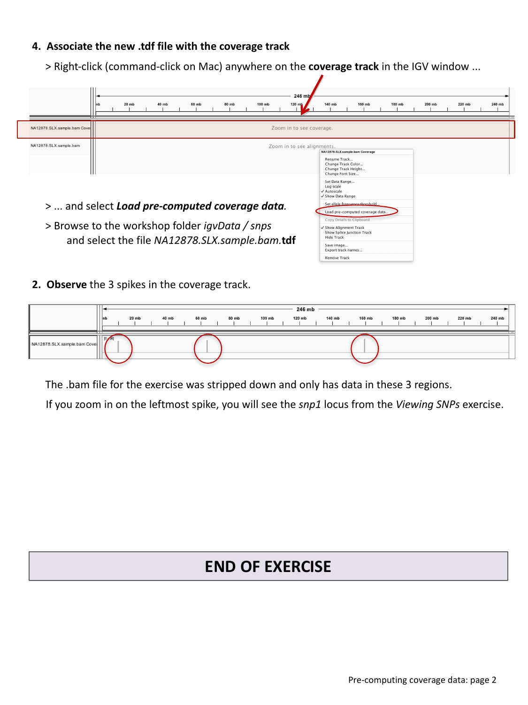
You should now see three spikes of coverage across the whole
chromosome. This sample BAM file was deliberately stripped down for the
workshop and only contains reads in these three regions — the leftmost
spike corresponds to the snp1 locus from the previous
episode.
Zoom back in
Zoom in on the leftmost coverage spike until you reach base-pair resolution. What locus do you land on?
Zooming into the leftmost spike brings you back to the
snp1 locus explored in Viewing Alignments and
SNPs — the precomputed coverage track and the on-the-fly coverage
you saw there are showing the same underlying reads, just computed
differently depending on zoom level.
- IGV computes BAM coverage on the fly at high zoom levels, but does not attempt this at low zoom levels for performance reasons.
- Use Tools > Run igvtools… > Count to
precompute a
.tdfcoverage summary file for a BAM file. - Attach a precomputed
.tdffile to a coverage track via right-click > Load pre-computed coverage data….
Content from Viewing RNA-seq Data
Last updated on 2026-09-03 | Edit this page
Estimated time: 40 minutes
Overview
Questions
- How do I see which exons are spliced together in RNA-seq data?
- How do I compare splicing patterns between two samples or tissues?
- Why do RNA-seq reads look different from the DNA reads in the previous episode when aligned in IGV?
Objectives
- Enable the splice junction track for RNA-seq alignment data.
- Load RNA-seq data hosted on the IGV server for two tissues.
- Interpret coverage and splice junction tracks to identify alternative splicing.
- Generate and interpret a Sashimi plot.
Background: why RNA-seq alignments look “split”
RNA-seq sequences mature mRNA, not genomic DNA. By the time a gene’s pre-mRNA becomes mRNA, its introns have already been spliced out, so the short reads generated from it are sampled from a continuous stretch of joined-together exons, with no intron sequence in between.
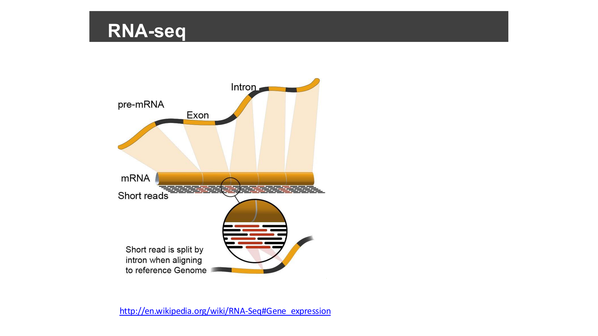
The reference genome, however, still contains the introns. So when an RNA-seq read happens to span two exons, aligning it back to the genome means the aligner has to split that one read into two pieces with a gap between them — the gap corresponds to the intron that was removed from the mRNA. This is exactly the “read spanning a splice junction” you will see represented as a gapped alignment, and later as an arc in the splice junction track.
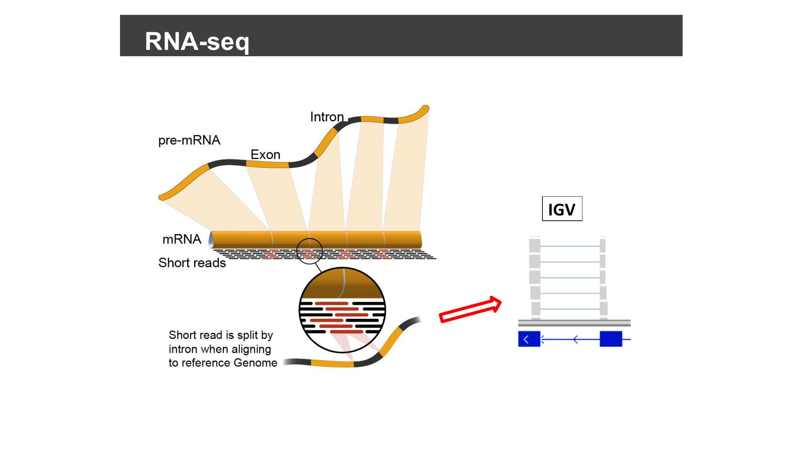
(Diagram source: Wikipedia, RNA-Seq § Gene expression.)
This episode uses example RNA-seq data hosted on the IGV server, so you will need an internet connection.
Set preferences to show splice junctions
Select View > Preferences…, then the Alignments tab, and check Splice Junction Track under “On initial load show”.
Load RNA-seq data
Select Human hg19 from the genome drop-down menu. Then select File > Load from Server…, open the Tutorials menu, check the box next to RNA-Seq (Body Map), and click OK.
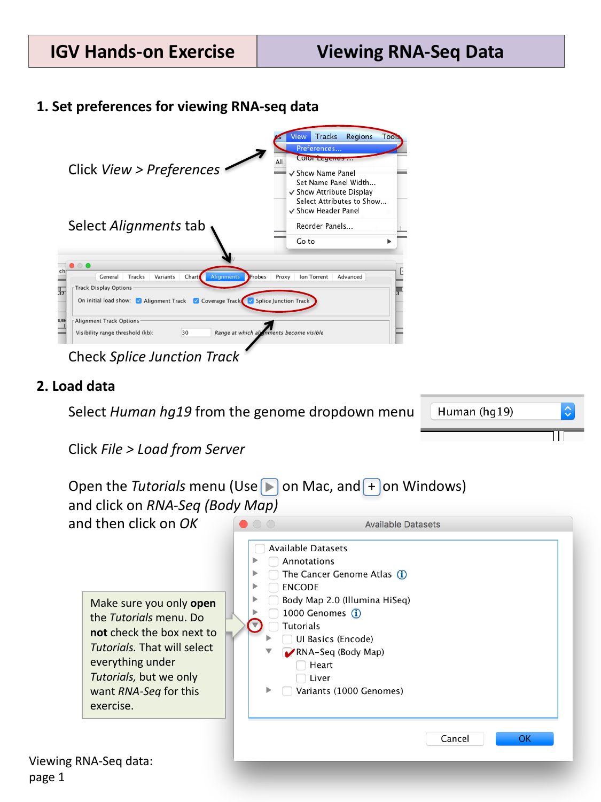
This loads coverage, alignment, and splice junction tracks for two tissues: heart and liver.
Jump to a gene and explore isoforms
Type SLC25A3 into the search box and click
Go.
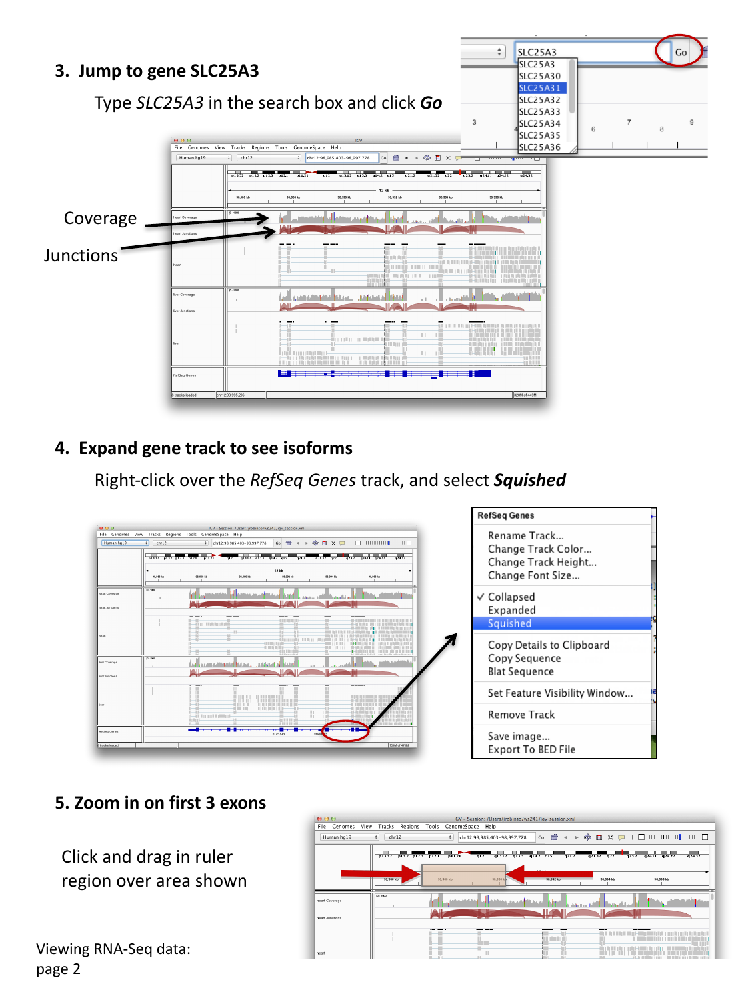
You should see, for each tissue:
- a coverage track (how many reads cover each position), and
- a junctions track (arcs connecting exons that were spliced together in at least one read).
Right-click the RefSeq Genes track and select Squished to reveal multiple isoforms of the gene on separate, compact rows.
Look for evidence of alternative splicing
Zoom in on the first three exons by clicking and dragging in the ruler over that region. Compare which isoforms in the RefSeq track are consistent with the coverage and junction pattern seen in each tissue.
Spot the difference between tissues
Looking at the heart and liver coverage/junction tracks side by side around the first few exons, can you find a region where one tissue shows a peak of coverage (an exon being used) that the other tissue does not?
Around the first few exons of SLC25A3, one tissue shows
a small “bump” of coverage — indicating a short exon or extra exonic
sequence — that is absent, or much lower, in the other tissue. This is a
sign of a tissue-specific alternatively spliced exon: the same gene
locus produces different transcript isoforms depending on which tissue
the RNA was sequenced from.
Zoom back out to view the whole gene again using the back button in the command bar.
Sashimi plots
A Sashimi plot is a specialized view for RNA-seq splicing that combines coverage and junction arcs into a single, cleaner visualization. Right-click over a junction track (or the alignments) and select Sashimi Plot. If prompted to select alignment tracks, verify that both heart and liver are checked, and click OK.
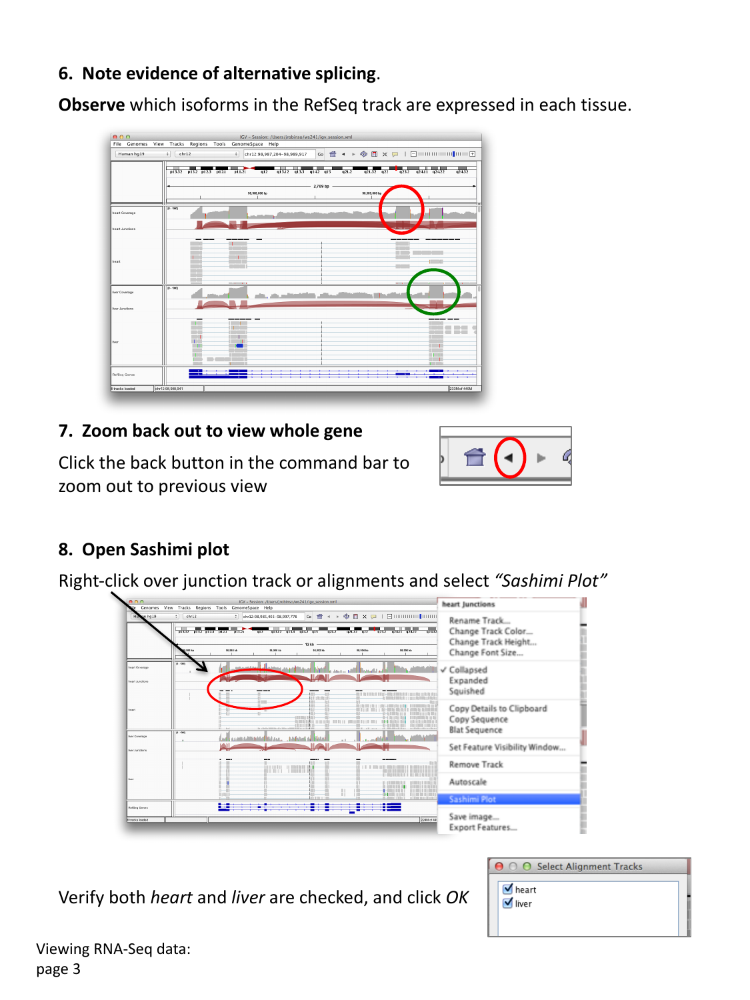
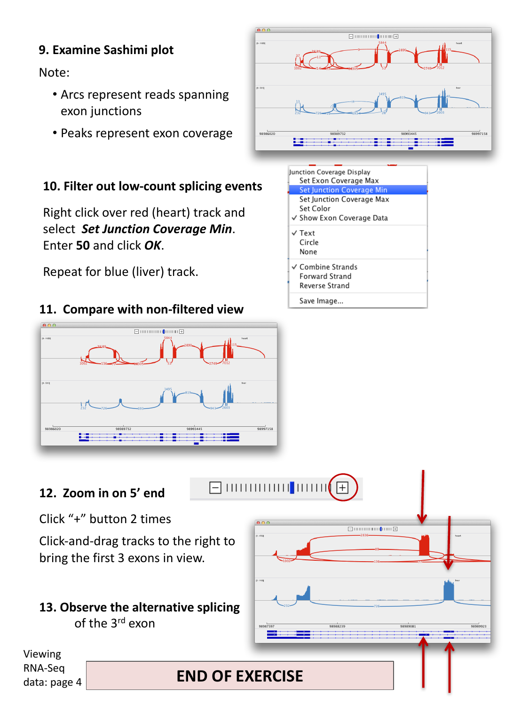
In a Sashimi plot:
- Arcs represent reads spanning an exon-exon junction; the number on the arc is the number of supporting reads.
- Peaks represent per-base exon coverage.
Filter out low-count splicing events
Real datasets often contain many low-count, spurious-looking
junctions. Right-click over one track (e.g. the red/heart track) and
select Set Junction Coverage Min. Enter 50
and click OK. Repeat for the other track
(e.g. blue/liver).
Compare this filtered view to the original, unfiltered one — filtering makes it much easier to see the dominant, well-supported splicing pattern in each tissue, without being distracted by rare junctions.
Confirm alternative splicing of the third exon
Zoom in on the 5’ end of the gene (click “+” on the zoom widget a couple of times, then click-and-drag the tracks to bring the first three exons into view). Compare the junction arcs for heart and liver around the third exon.
One tissue’s junction arcs skip over the third exon entirely (an arc jumps directly from exon 2 to exon 4), while the other tissue’s arcs include a junction into and out of exon 3. This is direct evidence, at the level of individual spliced reads, that exon 3 is alternatively spliced (included in one tissue’s dominant transcript, but skipped in the other’s).
- RNA-seq reads come from spliced mRNA (introns already removed), so a read spanning two exons aligns back to the intron-containing genome as a gapped, “split” alignment.
- Enable the splice junction track (via View > Preferences > Alignments) to see, as arcs, which exons are spliced together in RNA-seq data.
- Compare coverage and junction tracks across samples or tissues to spot alternative splicing.
- A Sashimi plot combines exon coverage (peaks) and junction reads (arcs) in one view, and read-count filtering helps focus on well-supported junctions.
Content from Viewing Variants and Genotypes
Last updated on 2026-09-03 | Edit this page
Estimated time: 35 minutes
Overview
Questions
- How does IGV display variants and genotypes from a VCF file?
- How can I compare variant patterns across groups of samples, such as populations?
Objectives
- Load a multi-sample VCF file together with its sample metadata.
- Distinguish the variant sites panel from the per-sample genotypes panel.
- Interpret the allele and genotype color coding IGV uses.
- Group and compare genotypes across sample populations.
Why this dataset?
The VCF session you will load contains variant calls on human chromosome 22 for about 850 people sampled from populations around the world — a subset of the 1000 Genomes Project dataset.
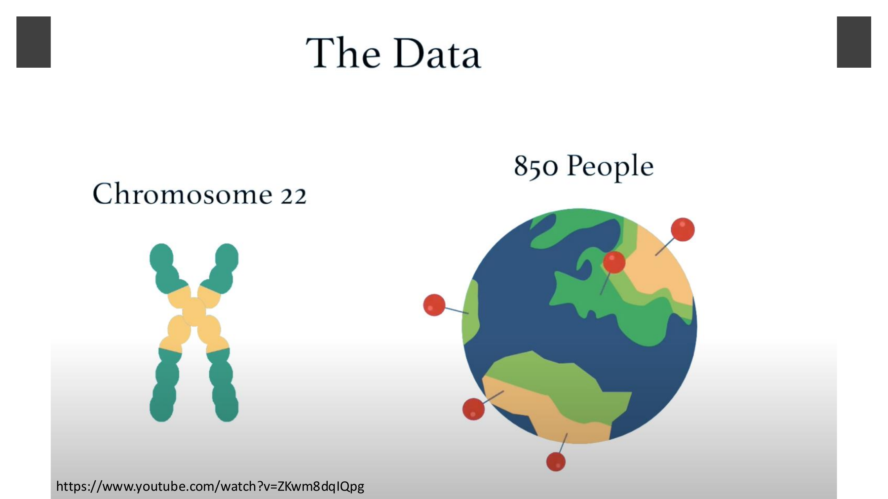
Zoomed in on the APOL1 gene, one particular marker,
rs9622363, tells a striking evolutionary story.
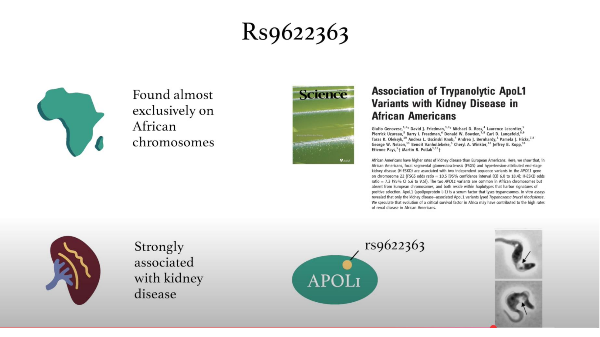
APOL1 encodes a protein that can lyse the parasite that causes African sleeping sickness, and coding variants in the gene — found almost exclusively on chromosomes of African ancestry — strengthen that protective effect. But the same variants come at a cost: Genovese and colleagues showed they are also strongly associated with elevated rates of kidney disease in African Americans (Genovese et al., “Association of Trypanolytic ApoL1 Variants with Kidney Disease in African Americans,” Science, 2010). This is exactly the kind of population-specific signal you will be able to spot for yourself later in this episode by grouping genotypes by population.
Load the session
This exercise uses a pre-built IGV session that loads a population
VCF file together with sample attribute information (population and sex
for each sample). Select File > Open Session…,
navigate to igvData/vcf/, and open
vcf_session.xml.
Observe the variant and genotype panels
IGV splits VCF data into two panels:
- a variant sites panel (one row) showing where variants are located along the genome, and
- a genotypes panel (one row per sample) showing each sample’s genotype at every variant site.
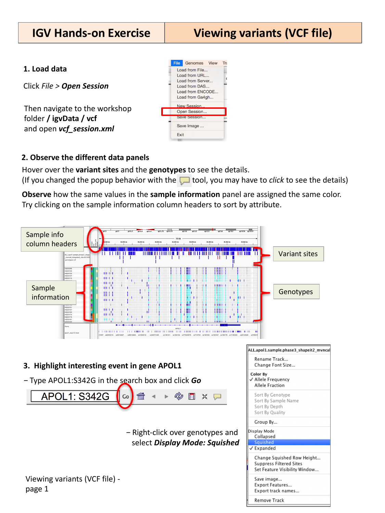
Hover over a variant site or a genotype cell to see its details in a popup. (If you changed the popup behavior earlier to “on click”, click instead of hovering.)
Both panels use color to summarize a lot of information at a glance:
-
In the variant sites panel, blue marks the reference allele and red marks the alternate allele at each site.
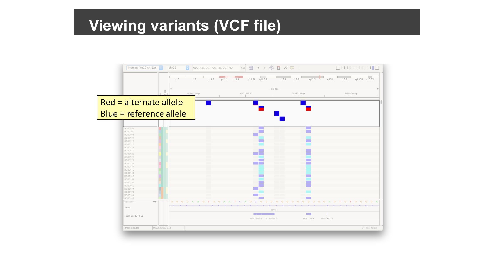
Zoomed-in variant sites: blue squares are the reference allele, red squares are the alternate allele. -
In the genotypes panel, cyan marks a homozygous (alternate/alternate) genotype, blue marks heterozygous (reference/alternate), and grey marks homozygous reference.
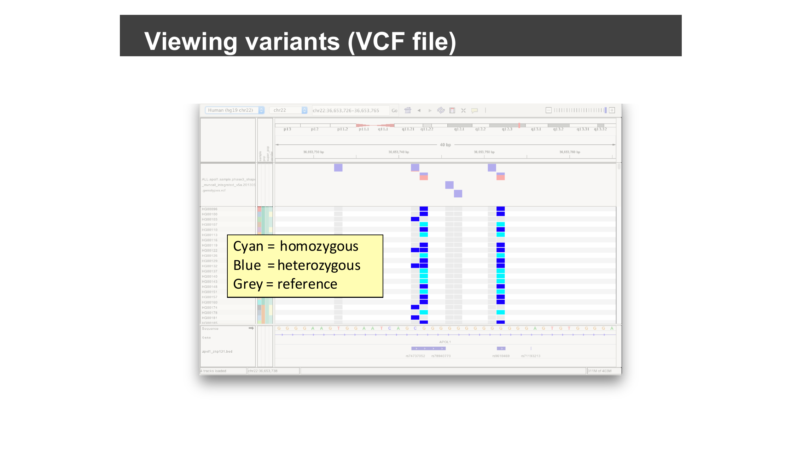
Zoomed-in genotypes: cyan for homozygous alternate, blue for heterozygous, grey for homozygous reference.
A narrow sample information column to the left of the genotypes uses color to represent each sample’s metadata (e.g. population). Samples sharing the same value are shown in the same color. Try clicking on the sample information column headers to sort samples by an attribute.
Where does the sample information come from?
Sample metadata is defined in an auxiliary tab-delimited file,
separate from the VCF itself: the first row names the metadata columns
(e.g. sample, pop, super_pop,
gender), and the first column holds sample names that must
exactly match the sample names in the VCF. The pre-built session you
loaded already references this file, but you can add the same kind of
sample-information file to your own VCF tracks.
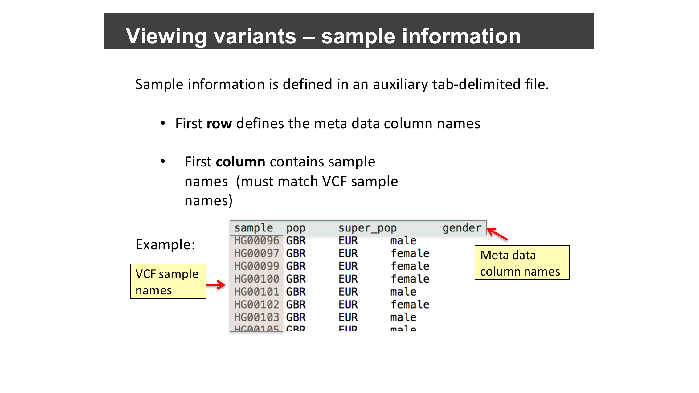
sample column matching the VCF’s sample
names and additional metadata columns.Highlight variants in a gene of interest
Type APOL1:S342G into the search box and click
Go to jump to a specific amino-acid-level variant in
the APOL1 gene.
Right-click over the genotypes track and select Display Mode: Squished to make room for more samples on screen at once.
Group samples by population
Right-click over the genotypes track again, select Group By…, and choose the super_pop attribute.
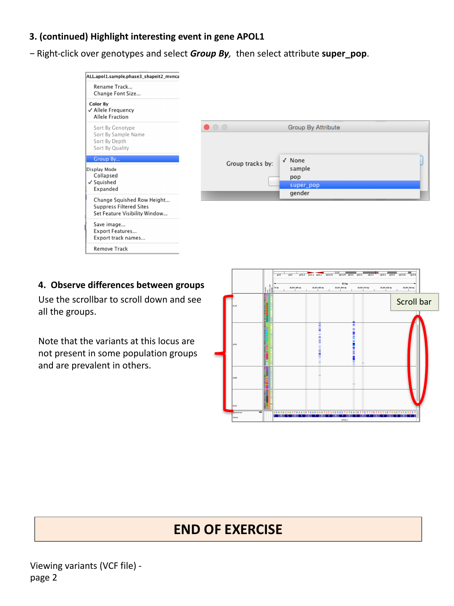
Use the scrollbar to scroll down through all the population groups.
Compare variant frequency across populations
At the APOL1:S342G locus, scroll through the population
groups you just created. Is this variant equally common in every
population group?
No — the variants at this locus are not evenly distributed. They are absent, or nearly absent, in some population groups, and much more prevalent in others, consistent with the African-specific selective history of APOL1 variants described earlier in this episode. This kind of population-stratified pattern is common for variants under different selective pressures (or genetic drift) in different ancestral populations, and grouping genotypes by population makes this kind of pattern immediately visible, without needing to compute allele frequencies separately for each group.
Coloring genotypes
The genotype track’s right-click menu also offers Color By > Allele Frequency or Allele Fraction, and options to sort by genotype, sample name, depth, or quality — useful alternatives or complements to grouping by a sample attribute.
- A VCF track in IGV has a variant sites panel and a per-sample genotypes panel; a sample information color bar (driven by an auxiliary tab-delimited file) can show sample metadata such as population.
- Variant sites are colored blue (reference allele) / red (alternate allele); genotypes are colored grey (homozygous reference) / blue (heterozygous) / cyan (homozygous alternate).
- Search for a variant using
gene:protein-changesyntax (e.g.APOL1:S342G) as well as by coordinate or gene name. - Grouping genotypes by a sample attribute (e.g. population) makes it easy to compare variant patterns across groups of samples.
Content from Wrap Up
Last updated on 2026-09-03 | Edit this page
Estimated time: 10 minutes
Overview
Questions
- What have I learned, and where can I go next with IGV?
Objectives
- Summarize the IGV skills covered in this lesson.
- Identify further IGV features and resources to explore independently.
What we covered
Across this lesson you have:
- loaded reference genomes both from IGV’s hosted server and from your own local FASTA file,
- navigated between whole-genome, chromosome, region, and base-pair resolution views,
- combined two numeric tracks with a simple arithmetic operation,
- inspected aligned sequencing reads and used sorting, coloring, and BLAT to distinguish a likely real SNP from a likely artifact,
- precomputed coverage data with
igvtoolsso it remains visible at every zoom level, - explored RNA-seq coverage, splice junctions, and Sashimi plots to identify alternative splicing between tissues, and
- explored population variant data from a VCF file, including grouping genotypes by sample attributes.
These are the same core skills — load data, navigate, and use track-specific display options to interrogate a signal — that apply to almost any data type IGV can display.
Where to go next
-
Structural variants. The workshop data you
downloaded also includes an
svs/folder with a BAM file aligned to human chromosome 21 (hg38). Try loading it and look for signatures of structural variation: clusters of reads with unexpectedly large or small insert sizes, reads that align in the wrong orientation relative to their mate, or a sudden drop in coverage partway through a region. - igv.js and IGV-Web. If you want to embed genome browser views in a web page or share a specific view with collaborators without asking them to install anything, look at igv.js and IGV-Web, which share much of the same track and navigation model as the desktop application you used here.
- Batch scripting. IGV supports batch scripts (Tools > Run Batch Script…) for automating repetitive tasks, such as generating snapshot images across many loci — useful if you find yourself repeating the same manual steps for many regions or samples.
- The full IGV user guide. https://igv.org/doc/desktop/ documents every track type and display option, well beyond what a single workshop can cover.
- Video tutorials. The IGV YouTube channel has short, focused videos on specific features (data navigation, sequencing data, VCF files, RNA-seq) if you would rather watch a feature demonstrated than read about it.
Feedback
If anything in this lesson was unclear, or you found a mistake, please let your instructor know — lessons like this one improve with feedback from the people who work through them.
- The core IGV workflow — load a genome and tracks, navigate to a region of interest, then use track-specific sort/color/display options — applies broadly across data types.
- IGV has many features beyond this lesson, including structural variant visualization, a web-embeddable sibling (igv.js), and batch scripting.